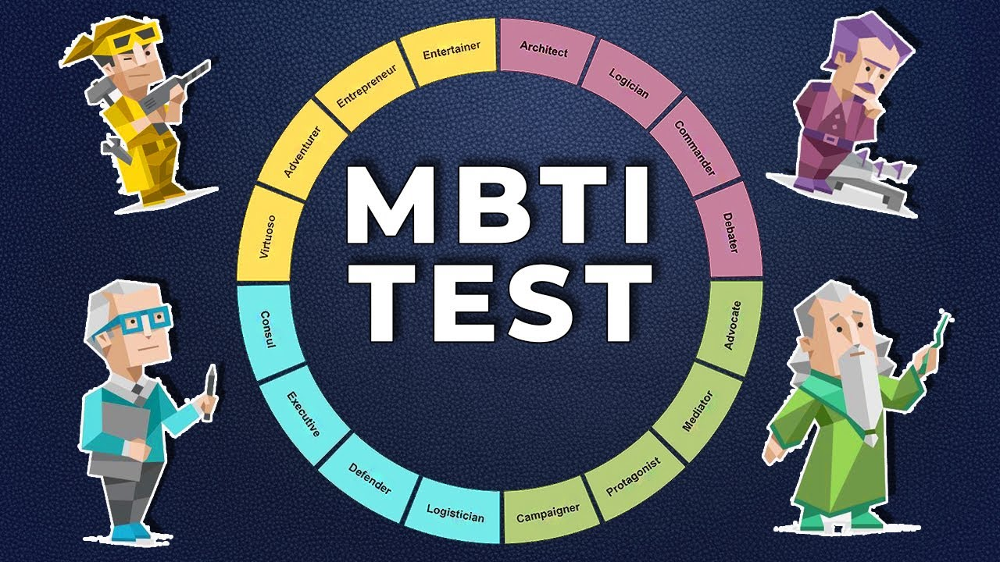

Types of Career Assessments
- Career assessments consist of surveys or test materials that assign potential careers based on the reported personality, interests, skills, and values.
- Personality Tests
- Interests Inventory Decision-Making and Goal-Setting
- Skills Assessment
- Values Assessment
- Myers-Briggs Type Indicator
O*Net
O*NET OnLine is a comprehensive career exploration tool that provides detailed information about occupations, skills, and work requirements.

True Colors
- Your values, personality, dreams, and passions
- Your interests, skills, and abilities
- Your learning styles, lifestyle, and more

Myers-Briggs Type Indicator (MBTI)
Helps individuals understand their personality preferences, strengths, and potential career paths based on 16 distinct personality types.